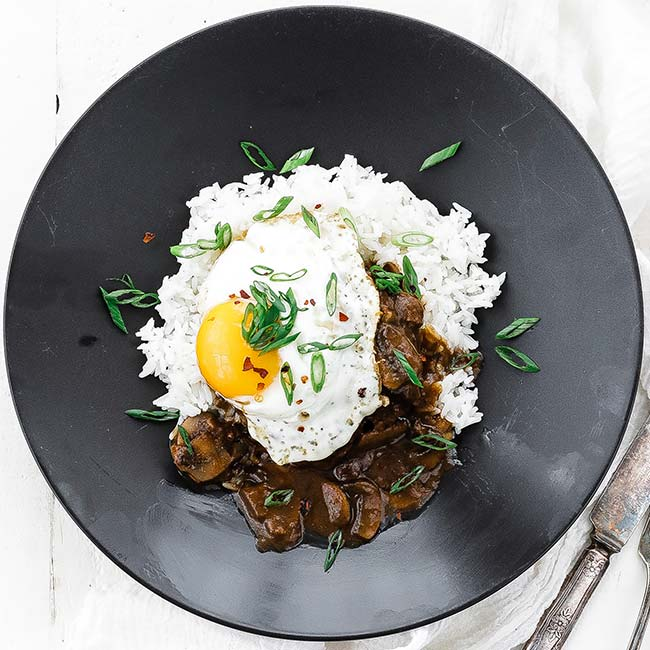

Loco Moco

Right out of the gate the name of this recipe seems crazy, I know, and the story behind it is pretty funny. Legend has it that a group of kids from a local gym and their parents went into a diner in Hawaii and asked for something different than a sandwich and with a bowl of rice, hence this recipe.
Ingredients
- 1/2 peeled small diced sweet onion
- 2 finely minced cloves of garlic
- 2 pounds 80/20 ground beef
- 2 tablespoons soy sauce
- 2 teaspoons Worcestershire sauce
- 2 tablespoons oil
- 8 ounces sliced cremini mushrooms
- 3 tablespoons all-purpose flour
- 2 cups beef stock
- 5 eggs
- 5 cups cooked jasmine rice
- ¼ cups sliced green onions
- sea salt and fresh cracked pepper to taste
Steps
- Add the onion, garlic, beef, 1 tablespoon of soy sauce, and Worcestershire sauce to a large bowl and mix until completely combined. Form into 5 patties and season on both sides with salt and pepper and set on a plate.
- Add the oil to a very large frying pan over medium heat and once it begins to lightly smoke add the hamburger patties in and cook for 3-4 minutes per side or until well browned on each side. See doneness note.
- Set the hamburger aside and drain off ½ of the oil used to cook the ground beef into a small frying pan and set the small pan aside.
- In the large frying pan over medium heat add in the mushrooms and cook for 3 to 4 minutes or until lightly browned.
- Add in the flour and stir it in until it is completely combined,
- Pour in the beef stock, remaining 1 tablespoon of soy sauce, and cook for 3-4 more minutes over medium heat until it becomes thick like gravy.
- Add back in the cooked meat patties and simmer over low heat.
- Fry the eggs 1 at a time in the small frying pan in the rendered meat fat over medium heat for 30 seconds for a sunny-side-up egg.
- Serve the beef patties and mushroom sauce over top of the cooked jasmine rice and top off with the fried egg and garnish with sliced green onions.
Make-Ahead: You can make this recipe up to 2 hours ahead of time, simply keep the hamburger patties into the gravy while covered in very low simmering heat. Likewise, keep the rice warm.
How to Reheat: Add the desired amount of beef and gravy to a saucepan and heat over low heat until hot.